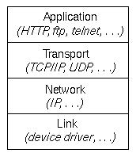

Distributed Programming: The Client/Server Model |
Client/Server Model
The client: requests an operation or service that some other application, the server, provides.
The server: receives a client request, performs the requested service and returns to the client any results.
Advantages:It offers simplicity in closely matching the flow of data with the control flow. It promotes modular, flexible, and extensive system designs. Data resources and computing services can be organized, integrated and used as a service. Widely used in distributed systems. Communication:
Servers communicate over a network. In Unix and Windows machines the network uses: TCP/IP & UDP.
TCP and UDP protocols:
